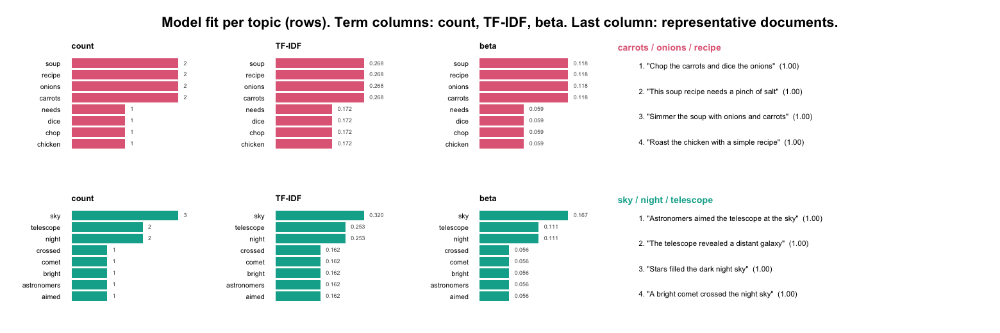

sbert computes genuine Sentence-BERT embeddings in R without Python. Fourteen models are supported, each pinned to an immutable revision and verified by SHA-256 (models() lists them): the classic sentence-transformers family (all-MiniLM-L6-v2 — the default — all-MiniLM-L12-v2, paraphrase-MiniLM-L3-v2, multi-qa-MiniLM-L6-cos-v1, all-mpnet-base-v2, and the multilingual MiniLM/mpnet pair) plus modern embedders: bge-small-en-v1.5 and bge-base-en-v1.5 (CLS pooling), multilingual-e5-small (100+ languages), nomic-embed-text-v1.5 and jina-embeddings-v2-small-en (8,192-token context), and mxbai-embed-large-v1 (1,024 dimensions). Hugging Face-compatible tokenization is provided by tok, and native model inference by onnxr. Embeddings are numerically identical to Python SentenceTransformers output (verified to ~1e-7).
The package never downloads a model or native runtime during installation, loading, examples, tests, or vignette building. Both downloads are explicit:
install.packages("sbert")
library(sbert)
install_runtime()
sentences <- c(
"A student is reading a research paper.",
"A learner studies an academic article.",
"The bicycle is parked beside the building."
)
embeddings <- encode(sentences)
topic_similarity(embeddings)encode() uses the default all-MiniLM-L6-v2 and asks once before its first download; pick any other pinned model by name (encode(sentences, model = "bge-small-en-v1.5") — see models() for the menu). Loaded models are reused for the whole session. Explicit model_download() / load_model() remain available for scripted installs and backend/thread control.
Semantic topic modeling uses the same native embeddings, deterministic k-means, representative documents, and class-based TF-IDF terms:
topic_model <- topics(
sentences,
n_topics = 2,
n_terms = 8
)
topic_model$topicsYou can run the whole thing with no download by passing a precomputed embedding matrix. Here two clearly separated groups — cooking and astronomy — fall out, each labelled by its most distinctive terms:
sentences <- c(
"Simmer the soup with onions and carrots",
"This soup recipe needs a pinch of salt",
"Chop the carrots and dice the onions",
"Roast the chicken with a simple recipe",
"The telescope revealed a distant galaxy",
"Astronomers aimed the telescope at the sky",
"A bright comet crossed the night sky",
"Stars filled the dark night sky"
)
# Two-dimensional stand-in embeddings, so this needs no model download.
embeddings <- rbind(
c(0.98, 0.02), c(0.95, 0.05), c(0.93, 0.07), c(0.90, 0.10),
c(0.05, 0.98), c(0.08, 0.95), c(0.10, 0.92), c(0.03, 0.97)
)
topic_model <- topics(sentences, n_topics = 2, embeddings = embeddings)
topic_model$topics
#> topic label n_documents proportion withinss
#> 1 1 carrots / onions / recipe 4 0.5 0.004327763
#> 2 2 sky / night / telescope 4 0.5 0.003540644plot(type = "fit") lays the whole model out at a glance — one row per topic, its three keyword views (raw count, class-based TF-IDF, and generative probability) beside its representative documents:
plot(topic_model, type = "fit")
Pass a data frame instead and name the text column: every other column rides along into $documents, and rows whose text is missing, blank, or a bibliographic placeholder are dropped once rather than by you.
topic_model <- topics(articles, column = "abstract", n_topics = 40)There is no correct topic count, so choose it from a table rather than by habit. select_topics() keeps every model it fits, and fitted() takes the one you want without refitting:
sweep <- select_topics(text, n_topics = c(10, 20, 30, 40), embeddings = embeddings)
sweep # coherence, diversity, explained
plot(sweep)
topic_model <- fitted(sweep, n_topics = 30)Topic terms depend only on the fitted assignments and the text, so every term setting can be retuned without repeating the clustering or the encoding:
terms(topic_model, n = 12) # distinctive terms (c-TF-IDF)
terms(topic_model, n = 12, sort_by = "beta") # the words a topic uses most
terms(topic_model, n = 12, weighting = "bm25", stem = TRUE)Cleaning happens at two levels, kept deliberately separate. Token filters tidy the labels without touching the text or its embedding: numbers, roman_numerals, and section_numbers (each "keep" or "remove") drop bare years, chapter numerals, and indices such as 1.2.3 from the topic terms only, so a number still shapes the embedding while staying out of a cluttered label.
topics(text, n_topics = 30, embeddings = embeddings,
numbers = "remove", roman_numerals = "remove", section_numbers = "remove")clean_corpus() cleans the source text before encoding — repairing junk characters, stripping list markers and reference numbering, and dropping whole low-content units (citation lists, reference footnotes) by their alphabetic density. Because Sentence-BERT is robust to a little noise, this is about fixing genuinely broken text and removing non-content rows, not scrubbing every token. Clean once, then encode the result:
docs <- clean_corpus(raw_text, min_content = 0.5) # or a data frame + column =
embeddings <- encode(docs)
topics(docs, n_topics = 30, embeddings = embeddings)Fitted topic models support a full inferential layer — assignment of new documents, soft membership, generative word probabilities, and mixed-topic document distributions:
predict(topic_model, new_sentences) # nearest-centroid topics
topic_membership(topic_model) # fuzzy topic probabilities
terms(topic_model) # ranked terms + p(term | topic)
topic_gamma(topic_model, sentences) # per-document topic mixtureBeyond the curated registry, load_custom() loads any public Hugging Face repository with an ONNX encoder export, auto-detecting its configuration and pinning it locally on first use (“trust on first use”):
gte <- load_custom("thenlper/gte-small")
encode(sentences, gte)Multilingual corpora use the same API with a multilingual model:
model_download("paraphrase-multilingual-MiniLM-L12-v2")
multilingual <- load_model("paraphrase-multilingual-MiniLM-L12-v2")
embeddings <- encode(head(feedback_translations$feedback, 100), multilingual)n_topics is deliberately explicit: the package does not silently guess a topic count. You may also pass a precomputed embedding matrix through the embeddings argument for reproducible offline analysis.
Every topic solution can be evaluated and visualized without any further model call:
coherence(topic_model, measure = "npmi") # per-topic UMass / NPMI coherence
topic_diversity(topic_model) # distinct-vocabulary proportion
summary(topic_model) # scientific report + quality table
plot(topic_model, type = "sizes") # documents per topic
plot(topic_model, type = "terms") # top class-based TF-IDF terms
plot(topic_model, type = "map") # classical-MDS document mapTerm weighting supports the class-based TF-IDF, BM25 (weighting = "bm25"), and square-root (reduce_frequent_words = TRUE) schemes of Mendonca and Figueira (2025).
For very large corpora there is an instant-speed tier: potion-base-8M is a static (Model2Vec) model whose encoding is a token lookup and mean in pure base R — around 10,000 sentences per second, no ONNX involved, with the same pinning, verification, and verbs as every other model:
model_download("potion-base-8M") # 30 MB
fast <- load_model("potion-base-8M")
embeddings <- encode(text, model = fast)Topic models can be guided: name your topics and seed them with words or descriptions, and the seeds become the first centroids — initialization only by default, frozen with fixed_seeds = TRUE (zero-shot assignment):
topics(
text,
n_topics = 10,
seeds = c(
motivation = "student motivation and engagement",
assessment = "grading feedback and assessment"
)
)Around the topic model, a few utilities cover the everyday analysis moves:
keywords(text, n = 5) # embedding-ranked keywords (MMR)
stop_words(add = c("students", "learning")) # exclude corpus vocabulary
select_topics(text, n_topics = c(10, 20, 30), embeddings = embeddings)
tree <- topic_hierarchy(topic_model) # which topics are neighbours?
plot(tree) # labeled dendrogram
smaller <- reduce_topics(topic_model, n_topics = 12) # merge down, keep all verbsDocuments can be split into sentences, clauses, or phrases before embedding, entirely offline and deterministically:
segment(
"We had two goals: speed and clarity; both were met. See Fig. 3.",
level = "clause"
)
#> document_id document_name segment text
#> 1 1 1 We had two goals:
#> 2 1 2 speed and clarity;
#> 3 1 3 both were met.
#> 4 1 4 See Fig. 3.segment() returns one row per segment with the source document index, guarding abbreviations (abbreviations()), decimals, and parentheticals so they never end a sentence. The clause level (the default) also splits at subordinating hinges while keeping comma enumerations whole. max_tokens caps segment length so nothing overruns an encoder’s context window — an over-long segment is re-split at the finest punctuation first, and only word-chopped as a last resort; pass model = to count that model’s exact tokens.
segment(long_documents, level = "sentence", max_tokens = 256, model = model)Segments can carry their document’s context into the embedding: blend() keeps alpha of each segment’s context-orthogonal residual and inherits the rest from the parent document vector, so a sentence that is ambiguous in isolation embeds near its document’s subject while keeping what it alone says. The result drops into topics() and representatives() unchanged:
sentences <- segment(abstracts, level = "sentence")
embeddings <- blend(sentences, abstracts, alpha = 0.5)The bundled feedback_translations dataset (8,757 multilingual AI-generated mathematics feedback messages from the Levebee educational application, with English translations) provides a realistic corpus for trying the full workflow offline:
head(feedback_translations)
#> feedback
#> 1 Víš, co znamená o jeden více?
#> 2 V červeném má být o dva více než v modrém.
#> 3 Když to není člověk, tak co to může být?
#> 4 Co znamená všechny za prvním?
#> 5 V šedém rámečku je pět obrázků. Kde je o jeden obrázek méně?
#> 6 Podle čeho se obrázky střídají?
#> translation
#> 1 Do you know what “one more” means?
#> 2 There should be two more in the red than in the blue.
#> 3 If it’s not a person, what could it be?
#> 4 What does “everyone after the first one” mean?
#> 5 There are five pictures in the gray box. Where is there one picture less?
#> 6 How do the pictures alternate?A second dataset, covid, holds 4,170 COVID-19 research abstracts (2020-2024) with publication years — a longer, more technical corpus for topic modeling and temporal analysis, showcased in the “Topic Modeling COVID-19 Research Abstracts” article.
Model downloads range from 31 MB (potion-base-8M) to 1.3 GB (mxbai-embed-large-v1) and are stored under the platform-specific path returned by cache_dir(). Every artifact is verified by byte size and SHA-256 before it is used.
Tutorial
A full worked tutorial ships with the package and runs offline on the bundled feedback_translations data — building a six-topic model, checking its coherence and diversity, reading each topic through two keyword views, and confirming the labels with representative messages:
vignette("levebee_vignette", package = "sbert")Supported scope
- Models: fourteen pinned models (see
models()), classic and modern, English and multilingual, 256 to 1,024 dimensions, 128 to 8,192 tokens, 31 MB to 1.3 GB - Pooling: attention-mask-aware mean pooling or CLS pooling, per model
- Prefixes: model-pinned input prefixes applied automatically (E5, Nomic)
- Custom models:
load_custom()for any HF ONNX encoder repository, with trust-on-first-use local pinning - Tokenization: each model’s official
tokenizer.json, truncated to the model’s published maximum sequence length - Static models:
potion-base-8M, a pure-R Model2Vec token-lookup embedder with no ONNX Runtime dependency - Normalization: row-wise L2 normalization by default
- Segmentation: deterministic sentence, clause, and phrase splitting with an abbreviation gazetteer and decimal/parenthetical guards
- Corpus cleaning:
clean_corpus()repairs junk characters, strips list and reference numbering, and drops low-content units by alphabetic density - Topic discovery: deterministic k-means with farthest-point initialization
- Topic descriptions: representative documents and BERTopic-style c-TF-IDF
- Topic inference:
predict()for new documents, fuzzy soft membership, generativebeta, and segment-based document-topicgamma - Topic evaluation: intrinsic UMass and NPMI coherence, and topic diversity
- Topic visualization: deterministic base-graphics views — topic sizes, term bars, representative documents, a per-topic fit report, and an MDS document map
- Backends: those exposed by
onnxr, with CPU as the portable default
Arbitrary unpinned Hugging Face models and training/fine-tuning are intentionally out of scope.